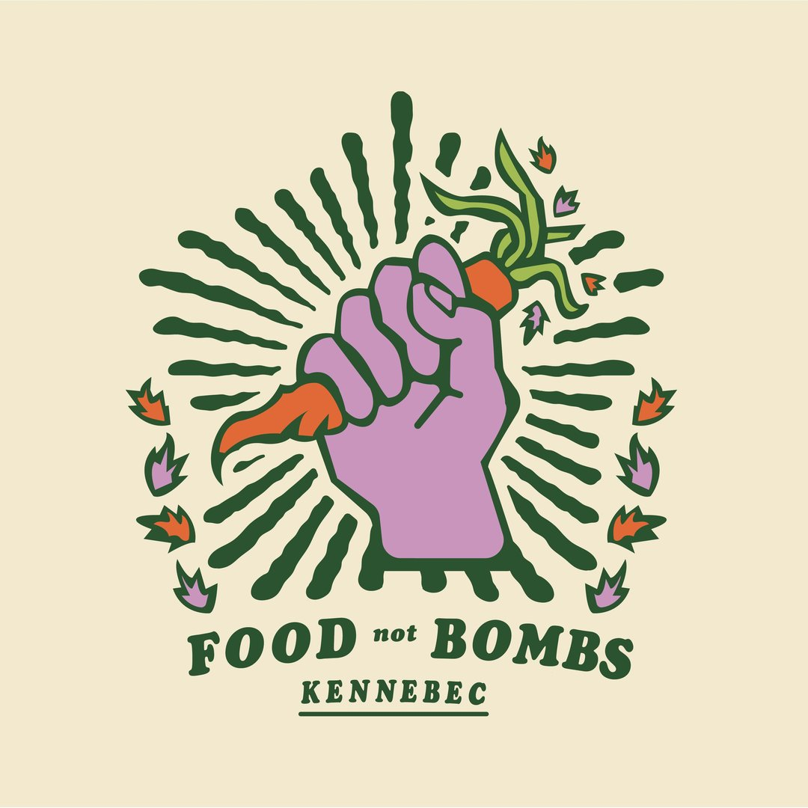
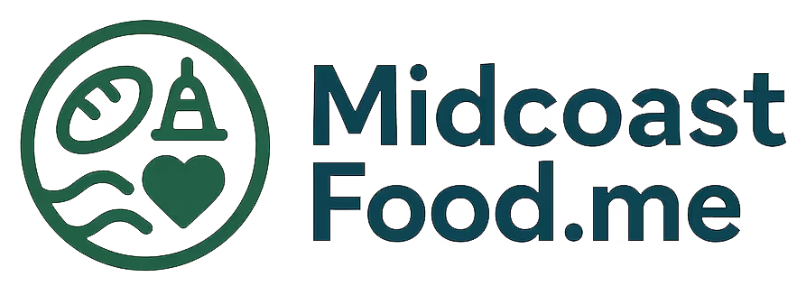

Join us at Plum Bakery in Gardiner, ME on the first Wednesday of every month at 5:00pm for a community potluck.
Fostering a welcoming space to do the work of community connection and organizing.
About
Direct Action Village is a space for finding and sharing resources, organizing strategies, and community. We are a hub where those who can help connect with those who need help. Come to our monthly community potluck on the first Wednesday of every month!
Our Mission
Our mission is to foster a welcoming space to facilitate community connection and organizing.
Our Values
We believe everyone should have the things they need to live with dignity and safety.
Capital Area Commons
The Capital Area Commons (CAC) is a community of Augusta, ME capital area locals. It administers the New Trajectories microgrant fund.
Applications are selected for funding via direct vote at monthly meetings. Financial contribution is not required to vote, and financial donations merit no special advantage in the voting process. Meetings are held on the first Wednesday of the month at 5:00pm at 347 Water Street in Gardiner, ME. The only requirement to vote on a project is to be present at the meeting.
The CAC doesn't have an executive. Organizational positions are unpaid, voluntary, and held on a rotational basis.
New Trajectories
New Trajectories is a community-funded microgrant program aimed at supporting creative projects for social good in Maine's capital area.
Grants max out at $1,000 a month, pooled from members of CAC. Grants are no-strings-attached support for community projects. Grant proposals can be submitted by anyone.
Grant proposals are required to comply with all local, state, and federal laws. Preference is given to projects that serve Maine's capital area and can be accomplished within 3 months. Creativity and quirkiness are encouraged!
Apply for a grant here. The form works without JavaScript. Only the questions about your project are required, and you can skip everything about yourself.
Previous recipients of the New Trajectories Grant include:
- The Gardiner Poetry Festival
- Food not Bombs Kennebec County
- Vaughn Woods & Historic Homestead food pantry and community gardens
- Maine Youth Power radical teen book club
Resources
Food Not Bombs Kennebec

There is now a capital area branch of Food Not Bombs that serves Gardiner, Hallowell, Augusta, Waterville, and everywhere in-between! Check them out on Instagram @foodnotbombskennebec.
Miles Delivers Action Coalition (MDAC)
MDAC is a group organizing to prevent the closure of another rural
labor & delivery unit in Maine. They are currently organizing to
keep the Miles Labor & Delivery unit at MaineHealth's Lincoln
Hospital in Damariscotta, Maine open. They also have a wide
variety of volunteer opportunities. Check out their website at
milesdelivers.org.
Maine Breathes Easy (MEBE)
MEBE is a diverse and unranked group of community members that
practice precautions against the dangerous impacts of COVID and
other serious illnesses. They offer free support, connection,
information, testing, personal protective equipment, and more
through consensus-driven activities. Visit their website to learn
more or to request free masks at
mainebreatheseasy.org.
ICE Response
- Maine Immigrants' Rights Coalition - Welcome to the Maine Immigrant Resource Hub & Hotline
- ILAP Maine - Know Your Rights
- Activate Maine
- Maine Solidarity Fund
Midcoast Food

MidcoastFood.me maintains a crowd-sourced statewide database of food resources across Maine. Find a resource near you or contribute a new listing!
Contact
Connect on Social Media
PS: Our GitHub is also where the source code for this website lives (and is even hosted for free via GitHub Pages)! The code that runs our email list is up there too.
Join our Email List or Get Involved
Sign up for the Mailing List. It asks for a name and an email address. The name does not have to be your legal one. After you sign up, we'll email you a link to confirm.
The form needs JavaScript (for a captcha that keeps bots out). If you have it turned off, or you would rather not use a form, email us instead.
Want to know what we do with your email address? Read our Data Policy.